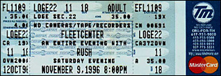

|
November 9, 1996 The FleetCenter. Boston, MA
 scan by Ray Lambert
The Boston Globe
Rush bucks trends to deliver for fans Trends come and go, but Rush remains. The Canadian power trio has bashed away for 20-plus years and has no plans to stop now, despite a radio climate seen as inhospitable to veteran bands. So what else is new? "Rock music is very fragmented these days, but we've always stood outside the mainstream anyway," Rush guitarist Alex Lifeson said yesterday. "We've had the benefit of a great, very loyal fan base, so we haven't had to compromise ourselves. With every record we make, we try to move forward and not live off past successes. We feel like a fresh, young band with everything we do. And as I look out during the shows these days, I see a lot of young kids coming to check us out, so that feels good." After a three-year absence, Rush is back on the road and headed to the FleetCenter on Saturday, Nov. 9. For the first time, it's "An Evening with Rush." That means no opening act, but instead two sets of Rush totaling two hours and 45 minutes. It also means a batch of tracks from the new album "Test for Echo" (a more aggressive, guitar-driven work that shoves keyboards further back in the mix) and archival tunes such as "2112" ("We're doing all of it, which we've never done live before") and "Natural Science." The tour also has plenty of new video, a Rush trademark. "We get trapped behind all the [instrumental] pedals and triggers, so it's good to have visuals," said Lifeson. "And we're using a lot of lighting effects, but no pyro like we did the last tour." Rush had taken some time off to enable Lifeson to make a solo album ("Victor," which showed his heavier, almost punky side). Singer Geddy Lee took the time to father a new baby girl, and drummer Neil Peart (who's motorcycling the length of this tour) to make a drum compilation and take swing lessons from noted teacher Freddie Gruber. "Neil has changed his whole style around. It's now more circular and fluid rather than linear," said Lifeson. "We're all in very good spirits, very healthy and enjoy being back on the road," said Lifeson. "And we still like each other's company, I must say."
The Boston Globe November 11, 1996
RUSH BRIDGES THE DECADES WITH EASE The more things change, the more they stay the same for Rush. Yet the Canadian rock trio keeps moving within its idiosyncratic yet successful reign over the arenas for two decades. And after a near-three-year hiatus, Rush hit a packed FleetCenter Saturday with a lean, refreshed delivery that bridged the '70s, '80s, and '90s. The two-set show, topping 2 1/2 hours, let Rush stretch out more than ever, from the 20-minute "2112" - an awkwardly futuristic suite with fans shouting "Hey!" on cue and quadrophonic sound like it was 1976 all over again - to several songs from the flat new "Test For Echo," which were much better live. Rush had a typically colorful light show, backing video (from cartoon imagery to perfect-angle stage action) and a few props (laser-firing radar dishes for the new CD's title track). Yet the emphasis remained on the trio's precise musicianship, which married hard-rock flourishes with tricky, fusionlike shifts. Drummer Neil Peart anchored the fresh attack, as he juggled mixed stick grips with a looser feel, suggesting the influence of a recent Buddy Rich tribute project. his platform revolved from a primary new single-bass kit to a double-bass set with electronic drums for "Red Sector A" and "The Trees," which he spiced with cowbells. And his later solo remained indulgent but thoughtfully varied as a peerless tour de force. Geddy Lee reached to sing the old high notes of "2112," yet mostly seemed relaxed, even in lashing fleet, funky bass lines. He played less synthesizer, but mixed analog and digital sounds. And guitarist Alex Lifeson squeezed frantic bursts in freedom tales "Red Barchetta" and "Freewill" that contrasted with his edgy, spacious chords in newer songs like "Roll The Bones." An encore of chock-a-block instrumental "YYZ" underscored Rush's spot as an arena anomaly. The trio's growth from Zeppelinesque space rockers to cool techinicians couldn't have maintained fan support without heart and humor. As Lee sang in "Spirit of the Radio" (and airplay is short now for Rush), "All this machinery making modern music can still be open-hearted."
|